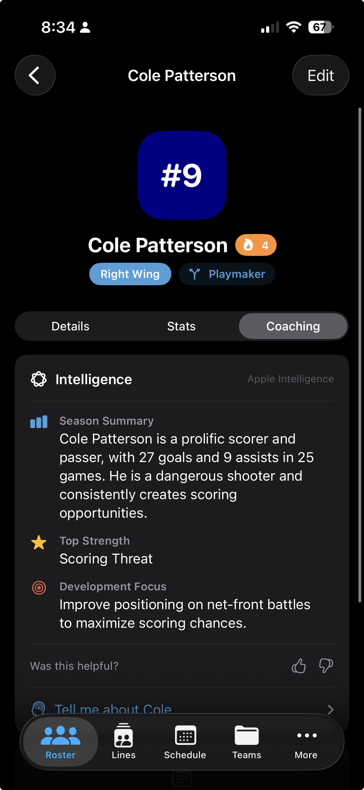
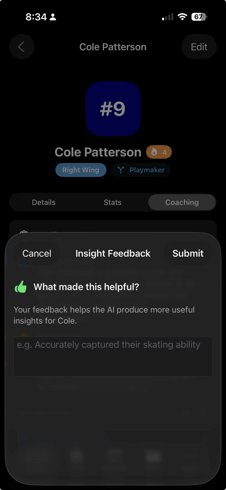
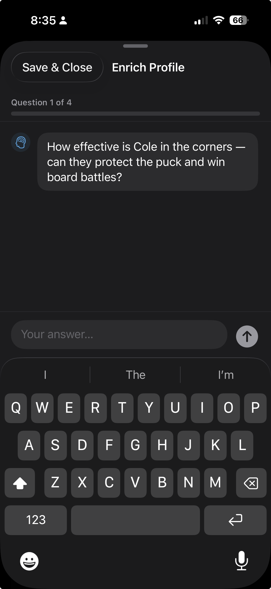
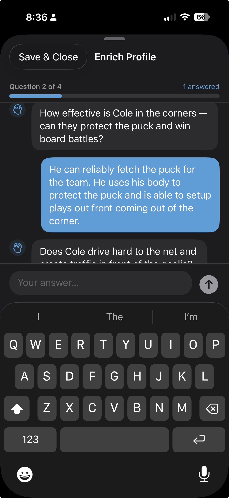

Feature Guide
Personalised, on-device coaching insights — generated from your player's stats, notes, and report card data.
Getting There
Open any player's profile, then tap the Coaching tab. The insight panel loads three sections generated on-device by Apple Intelligence: Season Summary, Top Strength, and Development Focus.

Using Insights
Each panel gives a focused, actionable coaching cue. Tap the thumbs up icon if the insight resonates, or thumbs down if it misses the mark. A thumbs down optionally prompts you for a correction reason — this feedback is woven into the next regeneration.

Getting Better Results
Insights regenerate automatically whenever the underlying data changes. The fastest way to improve them is to fill in the Enrichment Chat — a set of position-specific questions about the player. More answers mean richer context for Apple Intelligence to draw from.

Your thumbs up and thumbs down ratings — along with any correction reasons you provide — are included in the next generation prompt. Over time this adjusts the tone, focus, and specificity of insights to match how you actually coach.

Rinkside is currently in beta. Request TestFlight access to try Apple Intelligence coaching and every other feature.
Request TestFlight Access